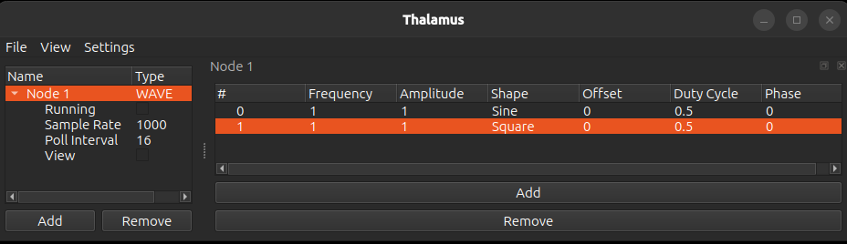
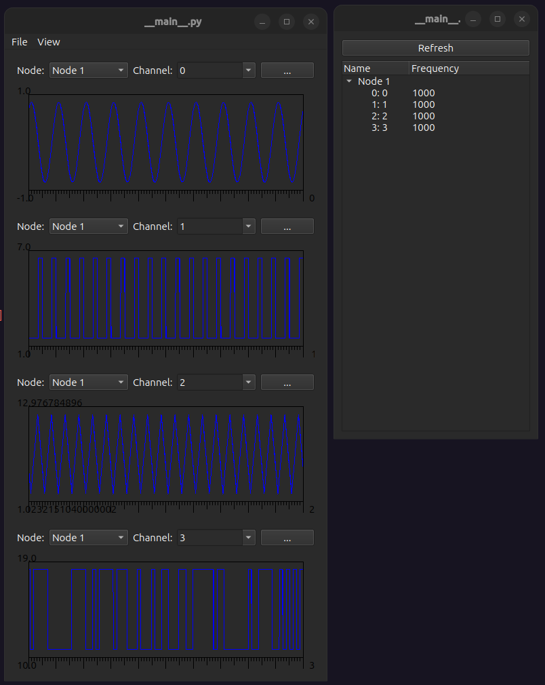

WAVE¶

The WAVE node is a software signal generator capable of generating several wave forms.
Properties¶
Running: Generate data.
Sample Rate: Sample rate of the signals.
Poll Interval: How often to generate data in ms (Sample Rate = 1000 and Poll Interval = 16 generates 16 samples of data every 16 seconds)
View: Open window to visualize signals.
Usage¶
In the node widget you can add a signal with the add button and remove selected signals with the remove button and each signal has the following properties
#: Incrementing number, also the name of the signal channel
Frequency: Frequency of the signal
Amplitude: Amplitude of the signal
Shape
Sine: Sine wave
Square: Square wave
Triangle Wave: Triangle wave
Random: At a rate equal to the signal frequency this signal randomly switches to either \(amplitude + offset\) or \(offset\)
Offset: Signal DC offset
Duty Cycle: What portion of the signal period is it high. Only applies to square waves.
Phase: Phase shift to apply to signal
